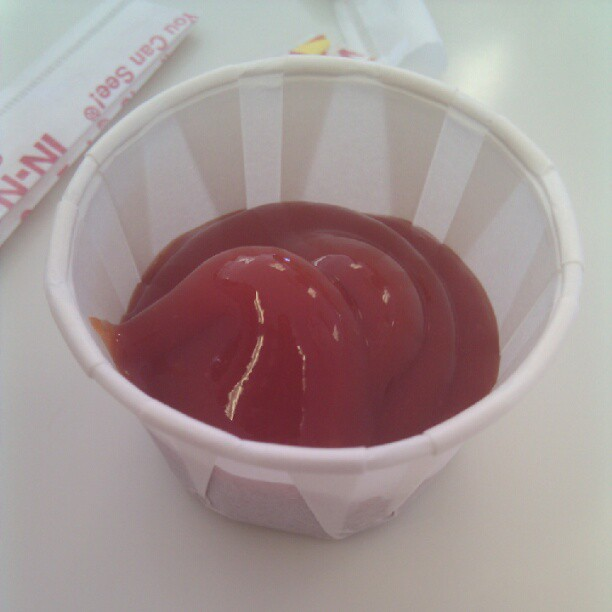

Ketchup

Description
Ketchup is a tasty tomato-based condiment. It’s great on fries or burgers. In a pinch, it’s not a bad beverage.
At the movies or at home, make a deliciously smart choice with Ketchup™!
Ingredients
- Tomato paste
- White distilled vinegar
- Maple syrup
- Garlic powder
- Onion powder
- Ground allspice
Steps
- Put everything in a bowl
- WHISK for like 2 minutes
- Pour into small pot at medium heat
- when it starts bubbling, stir for 4 mintes
- pour into container and let chill for a few hours
- put it in yr pie hole
Home